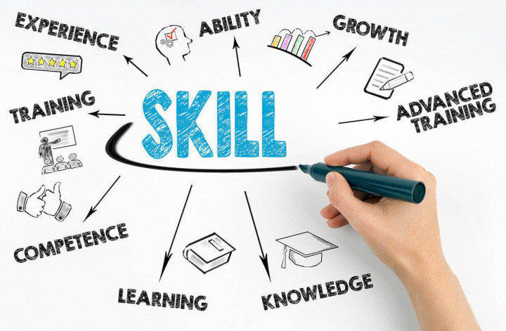

PORTOFOLIO
Portofolio Aldiansa Kautsar Ramadhani
Home
Profile
Skill
Aldiansa Kautsar Ramadhani

Skills
Menurut saya skill yang saya miliki adalah :
Hard Skills :
Kemampuan Berbahasa Inggris
Analisis Data
Pemrograman C++
Pemrograman Java
Soft Skills :
Antusiasme
Kemampuan Kerja Sama
Kemampuan Organisasi